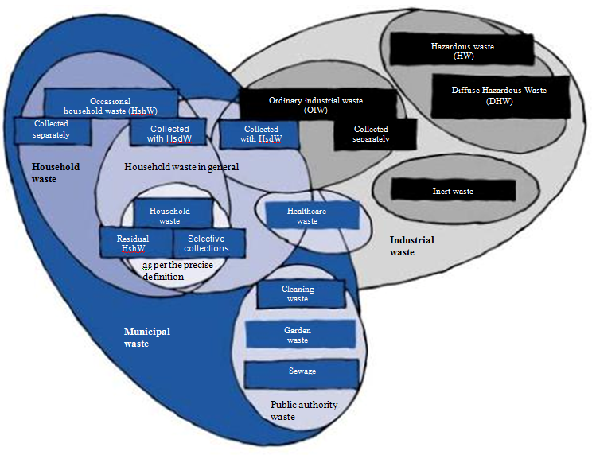
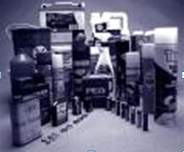

L’objectif de ce premier module est de définir le plus clairement possible les termes décrivant les différentes catégories de déchets produits en France, de situer ces catégories les unes par rapport aux autres, de préciser les quantités en jeu et les moyens de collecte et de traitement aujourd’hui mis en œuvre. Ce module a également pour but de vous faire comprendre quelle logique sous-tend la réglementation des déchets en France, quels sont ses objectifs et ses moyens.
Dans un premier temps, ce chapitre explique la plupart des termes utilisés pour distinguer les différents types de déchets produits par les communes, les industriels, le monde agricole, et les positionne les uns par rapport aux autres. Puis, dans un second temps, il donne des indications sur les quantités en jeu pour chaque type de déchets.
Les différents types de déchets sont présentés dans le schéma ci-dessous.

Fig. 1
Déchets issus de l’activité domestique quotidienne du foyer. Dans certains cas, une collecte sélective est organisée pour séparer certains matériaux des OM :
Un flux de collecte sélective est constitué par l’ensemble des matériaux collectés en même temps dans le même contenant. Selon le contexte, et en fonction notamment de l’unité de tri dont on dispose, on demandera aux habitants de séparer leurs matériaux recyclables en plusieurs flux :
Exemple
| Conteneur | Tri-Flow | Bi-Flow | Mono-Flow |
|---|---|---|---|
| First container | Glass | Glass | Glass Newspaper Magazines Cardboard Plastics Metals |
| Second container | Newspaper Magazines |
Newspaper Magazines Cardboard Plastics Metals |
|
| Third container | Plastics Cardboard Metals |
Déchets produits occasionnellement par un ménage qui, du fait de leur poids ou de leur volume (gravats, déchets de jardin, meubles usagés…), peuvent difficilement être collectés avec les OM.
La commune est responsable de leur collecte et de leur élimination. Elle peut proposer une collecte en porte-à-porte (une fois par mois ou une fois par trimestre) ou mettre à la disposition des particuliers une déchetterie. Dans certains cas, les communes disposent des bennes sur les trottoirs pour récupérer les déchets encombrants.
{1cm} {Déchets dangereux des ménages ou déchets ménagers spéciaux (DDM)} {0.3cm}
Déchets dangereux pour la santé produits par les ménages et qui sont souvent liés aux activités de jardinage (traitements des végétaux, désherbants…), de bricolage (peintures, solvants, décapants, aérosols…) ou bien encore à l’entretien de la voiture (huiles de vidange, batteries, antigels, liquides de freinage…). On peut y ajouter les piles, les piles rechargeables, la plupart des produits d’entretien (déboucheurs d’évier, produits anti-tartre…), les insecticides, etc. {0.3cm}
La commune est responsable de la collecte et de l’élimination de ces déchets. Ils ne doivent pas être collectés avec les OM. Elle peut proposer une collecte périodique, comme par exemple le service Planète (prestation Onyx) : une camionnette est stationnée sur les marchés une fois par mois et les particuliers peuvent y apporter leurs déchets dangereux. La collecte des déchets dangereux peut aussi être réalisée en déchetterie.
DéchetterieLieu clos et gardienné où les particuliers peuvent apporter leurs encombrants, leurs déchets de jardinage et de bricolage et, de plus en plus souvent, leurs déchets dangereux. Tous ces déchets sont déposés par le particulier dans des caissons ou dans des conteneurs spécifiques sous le contrôle du gardien. L’objectif de ce tri est de pouvoir recycler ou valoriser le maximum de matériaux.
Déchets de nettoiementTous les déchets produits sur les espaces publics de la commune : déchets de balayage des rues, vidage des corbeilles, déchets des marchés.
Déchets d’espaces vertsLes déchets végétaux des parcs et jardins publics de la collectivité, les feuilles et les tailles des arbres plantés le long des voies publiques, les déchets végétaux générés par les parterres et les bacs de fleurs de la collectivité.
Déchets de l’assainissementBoues résiduelles après dépollution des eaux usées (boues de station d’épuration des eaux usées), résidus de curage des égouts.
Déchets industriels banals ou déchets industriels et commerciaux (DIB / DIC)Déchets issus de l’activité économique (entreprises ou établissements), dont la nature est proche de celle des déchets des ménages (papiers, cartons, plastiques, métaux, bois, déchets putrescibles…) et qui peuvent être traités dans les mêmes installations de traitement que les ordures ménagères.
Lorsque les quantités restent faibles, la collecte de ces déchets peut être réalisée en même temps que les ordures ménagères. C’est presque toujours le cas pour les petits commerces et artisans de centre ville, et pour les déchets des écoles, des administrations, des casernes. Cependant, la commune n’a aucune obligation de prendre en charge ces déchets qui n’ont pas été produits par des ménages, mais par des professionnels.
Quand les quantités sont importantes (usines, supermarchés…), les DIB/DIC sont collectés par des entreprises privées qui proposent au producteur des moyens de collecte adaptés aux gros volumes (caissons, compacteurs…). Cette collecte cherchera à séparer les différents déchets afin de favoriser la valorisation.
Remarque importante Tout professionnel qui produit plus de 1100 litres d’emballages usagés par semaine doit s’organiser pour permettre la valorisation de ces emballages (recyclage ou valorisation énergétique).
La collecte et l’élimination de ces déchets sont de la responsabilité de l’entreprise ou de l’établissement producteur. Quand ces déchets sont collectés en même temps que les OM, cette responsabilité est transférée à la collectivité qui, en cas de problème, peut se retourner contre l’établissement s’il est identifié.
Déchets dangereux (DD)Ce terme remplace l’ancienne désignation « Déchets Industriels Spéciaux ». Il s’agit de déchets produits par des entreprises et qui, de par leur caractère polluant, doivent être éliminés dans des installations spécialisées. Ces déchets peuvent être :
Un suivi très strict de ces déchets est réalisé par le ministère de l’Environnement. La collecte et l’élimination de ces déchets sont de la responsabilité de l’entreprise ou de l’établissement producteur.
Déchets dangereux diffus (DDD)
Fig. 2
Ils sont de même nature que les déchets dangereux (DD), mais sont produits en faibles quantités par des petites entreprises ou par les laboratoires des lycées ou des universités. De ce fait, les moyens de collecte sont différents : par exemple, SARPI-Onyx propose le service Coralie, basé sur la mise à disposition de bonbonnes spécifiques à chaque produit chimique, collectées périodiquement. La collecte et l’élimination de ces déchets sont de la responsabilité de l’entreprise ou de l’établissement producteur.
{0.3cm} Déchets inertes {0.3cm}
Déchets non susceptibles d’évolution physico-chimique : qui ne brûlent pas, qui ne fermentent pas, qui ne diffusent pas d’éléments polluants dans l’eau. Deux grands types d’inertes :
Remarque : les déchets végétaux ne peuvent en aucun cas être considérés comme des inertes et être éliminés dans les mêmes conditions que ceux-ci.
La collecte et l’élimination des déchets inertes sont de la responsabilité de l’entreprise ou de l’établissement producteur.
{0.3cm} Déchets d’activités de soins à risque infectieux (DASRI)
Ils regroupent les déchets produits par les hôpitaux et les cliniques (déchets hospitaliers), mais aussi par tous les autres professionnels de la santé : médecins généralistes et spécialistes, dentistes, infirmières libérales, vétérinaires, laboratoires d’analyses médicales, etc. On les classe en deux catégories :
minipage{0.65} Plus de 600 millions de tonnes de déchets par an, dont :
Déchets agricoles 420 millions de tonnes/an| Catégorie | Quantité | Pourcentage |
|---|---|---|
| Élevage (fumier solide ou liquide, etc.) | 280 millions de tonnes/an | 66,7% |
| Production agricole | 55 millions de tonnes/an | 13,1% |
| Foresterie | 40 millions de tonnes/an | 9,5% |
| Industrie alimentaire | 45 millions de tonnes/an | 10,7% |
| Total | 420 millions de tonnes/an | 100% |
| Type de déchets | Quantité | Pourcentage |
|---|---|---|
| Déchets inertes | 100 millions de tonnes/an | 66,7% |
| Déchets industriels ordinaires (DIB) | 40 millions de tonnes/an | 26,7% |
| Déchets dangereux (HW) | 7 millions de tonnes/an | 4,7% |
| Total | 150 millions de tonnes/an | 100% |
0,8 million de tonnes/an
2 à 6 kg par lit et par jour Déchets hospitaliers contaminés : 0,21 million de tonnes/an Déchets hospitaliers considérés comme déchets ménagers : 0,49 million de tonnes/an Déchets de santé contaminés diffus : 0,1 million de tonnes/an
Déchets municipaux 53 millions de tonnes/an| Type de déchets | Quantité | Données additionnelles |
|---|---|---|
| Déchets ménagers | 19,2 millions de tonnes/an | – |
| Collectes sélectives | 1,6 million de tonnes/an | – |
| Déchets des commerçants/entreprises | 5,2 millions de tonnes/an | 434 kg/habitant/an |
| Déchets ménagers occasionnels | 4,5 millions de tonnes/an | 80 kg/habitant/an |
| Déchets d'assainissement | 22,5 millions de tonnes/an | 380 kg/habitant/an |
| Total | 53 millions de tonnes/an | – |
Ce chapitre présente les moyens de traitement mis en œuvre pour les différents types de déchets préalablement définis et les perspectives d’évolution de ces techniques.
La plupart des déchets agricoles sont réutilisés ou valorisés :
Ces déchets sont actuellement :
Ces déchets, de nature très proche des ordures ménagères, suivent en général les mêmes voies de traitement que celles-ci, ou des voies relativement proches. Cependant :
De par leur nature, ces déchets doivent suivre des filières spécialisées de traitement :
{0.3cm} Quelques chiffres (1993) :
| Filière de traitement | Pourcentage du tonnage HW |
|---|---|
| Valorisation | 32% |
| Traitement (physico-chimique, incinération) | 17% |
| Stockage en CSDU | 51% |
| Note : 50% du tonnage HW est traité dans les unités de traitement internes par les entreprises génératrices | Info complémentaire |
| Mode de traitement | Coût (€/tonne) | Remarques |
|---|---|---|
| Incinération | 100 - 105 | Traitement thermique |
| Traitement physico-chimique | 80 - 150 | Neutralisation et concentration |
| Stabilisation + Stockage CSDU | 300 | Hors taxes ADEME |
{0.3cm} Perspectives de changement :
Solutions de traitement multiples :
Ceux-ci sont considérés comme des déchets industriels banals (déchets de professionnels), ils sont bien souvent collectés en même temps que les ordures ménagères et suivent les mêmes voies de traitement. On se rend bien compte ici qu’il est indispensable que l’hôpital maîtrise parfaitement les circuits de collecte de ses déchets contaminés et non contaminés…
Perspectives de changement :
En 1993, près de 60% des déchets ménagers étaient stockés en décharge ou traités sans aucune forme de valorisation.
| Mode de traitement | Pourcentage | Description |
|---|---|---|
| Mise en décharge | 60% | Sans valorisation |
| Incinération | 20% | Avec valorisation énergétique |
| Compostage | 10% | Valorisation organique |
| Recyclage | 10% | Valorisation matière |
La combinaison de plusieurs moyens de traitement (recyclage, compostage, incinération) permet de réduire la quantité de résidus ultimes produite.
| Filière de traitement | Entrée (1000 kg) | Sortie (kg) | Valorisation |
|---|---|---|---|
| Collecte sélective | 1000 | 800 | Recyclage matière |
| Compostage | 1000 | 600 | Matière organique |
| Incinération (avec énergie) | 1000 | 250 | Énergie thermique |
| Incinération (sans énergie) | 1000 | 300 | Aucune valorisation |
| Résidu ultime (décharge) | Variable selon traitement | Stockage définitif | |
Cette combinaison du recyclage, du compostage et de l’incinération ne peut pas être généralisée sur tout le territoire national. Dans les départements très ruraux, les tonnages sont insuffisants pour qu’une unité d’incinération soit mise en place avec des coûts de traitement raisonnables. Dans ces départements, l’organisation du traitement des OM pourra s’appuyer sur le recyclage des emballages et des journaux-magazines, et sur le compostage de la fraction organique, les autres résidus étant stockés en décharge.
La notion de résidus ultimes s’adapte au contexte local et tient compte des coûts.
Il s’agit ici de comprendre la logique et les objectifs de la réglementation sur les déchets en France.
Le bilan peu satisfaisant à la fin des années 1980Gestion des déchets basée essentiellement sur le stockage en décharge + rejet par la population de ce système de traitement = à court terme, un problème!
Mise en place d’une nouvelle politique de gestion des déchetsUn thème majeur : limiter l'impact des centres de stockage Pour cela :
Déchet ultime : au sens strict, c’est un résidu du traitement des déchets dont on ne peut plus extraire ni élément recyclable, ni matière organique, ni énergie. Ce sont, par exemple, des résidus de dépollution des fumées d’incinération. Cette notion est à moduler en fonction du temps : un déchet ultime aujourd’hui n’en sera peut-être plus un demain, car la technique permettra de valoriser encore le produit. D’autre part, cette notion est à moduler en fonction du contexte local : les refus de compostage qui, techniquement, peuvent être valorisés énergétiquement, pourront être considérés comme déchets ultimes pour une collectivité rurale, car leur incinération engendrerait des coûts très élevés, ce qui n’est pas le cas en zone urbaine où la population et les tonnages sont plus importants, donc les coûts moins élevés.
Deux outils administratifs pour limiter les quantités stockées en décharge :Améliorer les techniques de stockage :
En 2002, l’ADEME estimait la production française de déchets dangereux à environ 6 millions de tonnes. Les secteurs d’activités à l’origine de ces déchets semblent très divers (cf. figure n°1). Néanmoins, deux familles de secteurs d’activité cohérents contribuent de façon majoritaire au bilan total :